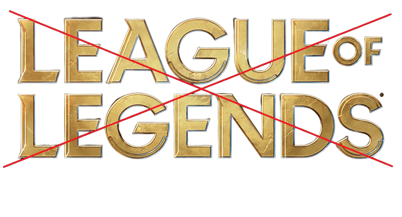
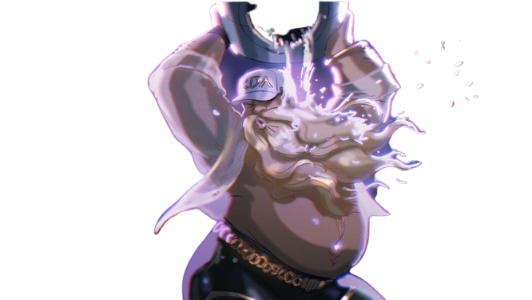

FIQUE LONGE DESSE INFERNO COMPACTADO EM JOGO PODE TER CERTEZA QUE SUA SANIDADE VAI COMPLETAMENTE DE RALO EM QUESTÃO DE MINUTOS JOGANDO ESSA PERSONIFICAÇÃO DO MAL.NO BOTÃO ABAIXO VOCÊ VERÁ O QUE ISSO CAUSA A SEUS JOGADORES.
X